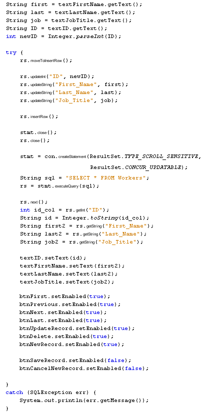

Before you can save a new record, you have to move the Cursor to something called the Insert Row. This creates a blank record in the ResultSet. You then add the data to the ResultSet:
rs.moveToInsertRow( );
rs.updateInt("ID", newID);
rs.updateString("First_Name", first);
rs.updateString("Last_Name", last);
rs.updateString("Job_Title", job);
rs.insertRow( );
After adding the data to the ResultSet, the final line inserts a new row.
However, to commit any changes to the database what we'll do is to close our Statement object and our ResultSet object. We can then reload everything. If we don't do this, there's a danger that the new record won't get added, either to the ResultSet or the database. (This is due to the type of Driver we've used.)
To close a Statement or a ResultSet, you just issue the close command:
stmt.close( );
rs.close( );
The code to reload everything is the same as the code you wrote when the form first loads:
stmt = con.createStatement(ResultSet.TYPE_SCROLL_SENSITIVE, ResultSet.CONCUR_UPDATABLE);
String sql = "SELECT * FROM Workers";
rs = stmt.executeQuery(sql);
rs.next( );
int id_col = rs.getInt("ID");
String id = Integer.toString(id_col);
String first2 = rs.getString("First_Name");
String last2 = rs.getString("Last_Name");
String job2 = rs.getString("Job_Title");
textID.setText(id);
textFirstName.setText(first2);
textLastName.setText(last2);
textJobTitle.setText(job2);
You're not doing anything different, here: just selecting all the records again and putting the first one in the Text Fields.
Here's all the code that saves a new record to the database (Obviously, a lot of this code could have went into a method of its own):

The code is a bit long, but you can copy and paste a lot of it from your DoConnect method. (We've Photo-shopped the stmt line because it's too big to fit on this page. Yours should go on one line).
(One other issue is that the ID column needs to be unique. Ideally, you'd write a routine to get the last ID number, then add one to it. Other databases, like MySql, have an AutoIncrement value to take care of these things. Just make sure that the ID value isn't one you have used before, otherwise you'll get an error message. Or write a routine to get a unique ID!)
Run your programme and test it out. You now be able to save new records to your database.
In the next lesson, you learn about deleting records